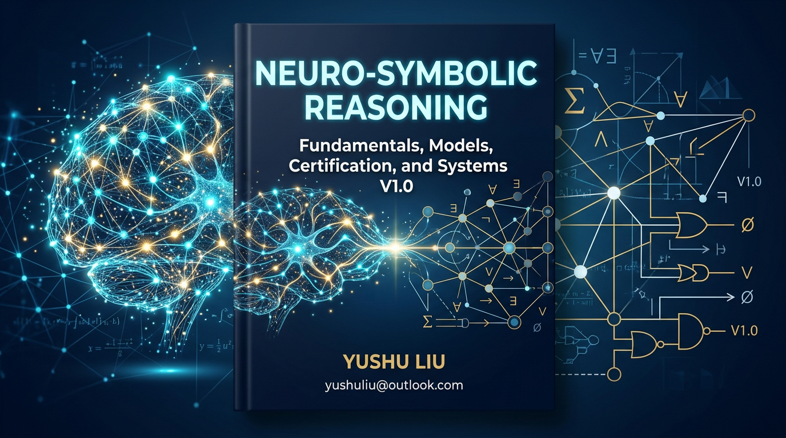
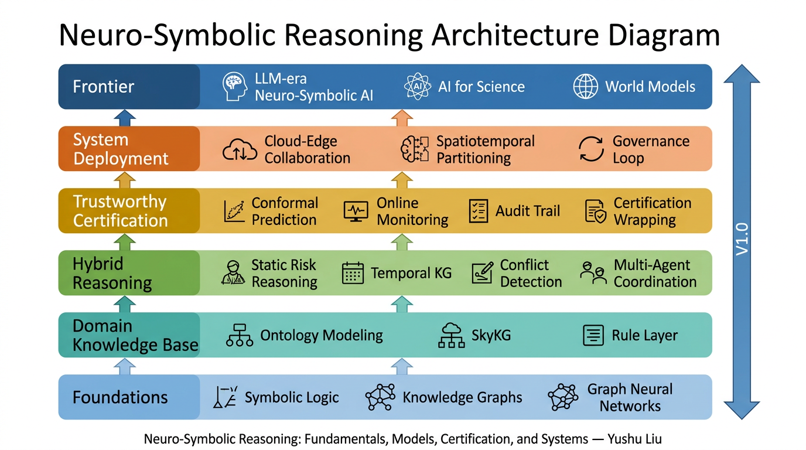

Neuro-Symbolic Reasoning:
Fundamentals, Models, Certification, and Systems
V1.0 — Open English Manuscript
A Knowledge-Graph-Driven Framework for Trustworthy Governance
in Urban Air Mobility and Safety-Critical AI


Yushu Liu | yushuliu@outlook.com | GitHub
What Is This Book About?#
Modern AI excels at perception and generation but still struggles with explicit reasoning, rule compliance, uncertainty calibration, and certifiable deployment in safety-critical settings.
This book develops a complete technical stack for neuro-symbolic AI — not just one model trick, but a full pipeline:
Knowledge Base → Hybrid Reasoning → Trustworthy Certification → System Deployment → Governance Loop
It covers 25 chapters across six layers, from symbolic logic and knowledge graphs all the way to cloud-edge deployment and LLM-era agents. Urban air mobility (UAM) is the primary scenario, but the methodology applies to autonomous driving, medical AI, industrial control, and AI for Science.

How Is This Book Different?#
Dimension |
Typical NeSy / Trustworthy AI resources |
This book |
|---|---|---|
Scope |
Single technique (e.g., logic + NN) |
Full stack: knowledge → reasoning → certification → deployment |
Trustworthiness |
Interpretability-focused |
Goes beyond to conformal prediction, online monitoring, certification wrapping, audit trails |
System view |
Model-centric |
Addresses compute gaps, cloud-edge collaboration, spatiotemporal partitioning, governance loops |
Application |
Abstract benchmarks |
Grounded in a real safety-critical domain (UAM) with generalizable patterns |
Openness |
Closed textbook or scattered papers |
Full open manuscript with runnable labs, knowledge graph, and structured reading paths |
In one sentence: This book is the first open resource that traces the entire path from symbolic logic to certifiable, deployable neuro-symbolic systems, with a real safety-critical domain as its testbed.
Table of Contents (25 Chapters + 3 Appendices)#
Part I — Foundations (Ch. 1–4)#
# |
Chapter |
Key topics |
|---|---|---|
1 |
Symbolism vs. connectionism, dual-peak dilemma, System 1 & 2 |
|
2 |
Propositional & first-order logic, forward/backward chaining, resolution, fuzzy logic |
|
3 |
RDF, OWL, ontology, KG embedding (TransE, RotatE), link prediction |
|
4 |
Inductive bias, GNN message passing, Transformer, Graph Transformer |
Part II — Domain Knowledge Modeling (Ch. 5–6)#
# |
Chapter |
Key topics |
|---|---|---|
5 |
Domain Knowledge Modeling for Trustworthy Governance in Low-Altitude Traffic |
Object taxonomy, causal chains, scenario templates |
6 |
Multi-source extraction, SkyKG, unified representation |
Part III — Hybrid Reasoning (Ch. 7–13)#
# |
Chapter |
Key topics |
|---|---|---|
7 |
Kautz spectrum, Type 1–6, integration patterns |
|
8 |
Logic-as-loss, posterior regularization, semantic loss, PINNs |
|
9 |
GraphRAG, structured retrieval, LLM + KG |
|
10 |
SkyKG reasoning, multi-layer explanation |
|
11 |
TKG, temporal GNN, event evolution |
|
12 |
Spatiotemporal conflict graphs, prediction models |
|
13 |
Multi-agent coordination, rule-bounded negotiation |
Part IV — Trustworthy Certification (Ch. 14–17)#
# |
Chapter |
Key topics |
|---|---|---|
14 |
Anchoring error, overconfidence, distribution shift |
|
15 |
Nonconformity scores, coverage guarantees, composite scores |
|
16 |
Online Monitoring, Distribution Drift, and Statistical Certification |
Martingale methods, concept drift, SkyCert |
17 |
Explainability Evaluation, Audit Trails, and Regulatory Interfaces |
Faithfulness metrics, audit trail design, DO-178C / SOTIF |
Part V — System Deployment (Ch. 18–21)#
# |
Chapter |
Key topics |
|---|---|---|
18 |
The Complexity of Neuro-Symbolic Reasoning and the Computing Gap |
Neighbor explosion, LLM latency, real-time constraints |
19 |
Distributed Reasoning Systems under Cloud-Edge Collaboration |
Device-edge-cloud, eventual consistency, event-driven scheduling |
20 |
Spatiotemporal Graph Partitioning and High-Concurrency Reasoning Engines |
Boundary buffers, structure-aware load balancing |
21 |
Platformization: From Model Stacking to Governance Closed Loop |
Three-stream unification, multi-role interface, SkyGrid |
Part VI — Frontier (Ch. 22–25)#
# |
Chapter |
Key topics |
|---|---|---|
22 |
CoT reasoning, tool learning, LLM reasoning limits |
|
23 |
Autonomous driving, medical AI, industrial control |
|
24 |
Scientific KG, symbolic regression, hybrid agent models |
|
25 |
From explainability to certifiability, governability, and deployability |
Appendices#
Appendix |
|
|---|---|
A |
|
B |
|
C |
Quick Start#
If you want to… |
Start here |
|---|---|
Understand the overall framing |
|
Browse the chapter map |
|
Get the fastest unique contribution overview |
|
Run hands-on code |
|
Explore the knowledge graph |
Repository Structure#
.
├── README.md # You are here
├── INTRODUCTION_EN.md # Full book introduction
├── TABLE_OF_CONTENTS.md # Linked chapter map
├── CITATION.cff # Machine-readable citation
├── LICENSE # CC BY-NC-SA 4.0 (text) + MIT (code)
├── CONTRIBUTING.md # How to contribute
├── CODE_OF_CONDUCT.md # Community standards
├── cover.png # Book cover image
├── chapters/ # 25 chapter Markdown files
│ └── Chapter_01 … 25_*.md
├── appendices/ # 3 appendices
│ └── Appendix_A / B / C_*.md
├── experiments/ # 6 runnable Python lab scripts (MIT)
│ ├── README.md
│ └── lab1 … lab6_*.py
├── Chart/ # 75 translated English figures (.drawio + .svg + .png)
│ └── Figure1-1 … Figure25-3.*
├── knowledge_graph/ # Book knowledge graph overview
│ └── Book_Knowledge_Graph.md
└── docs/figures/assets/ # Architecture diagram and other assets
└── book-architecture.png
Licensing#
Component |
License |
|---|---|
Book text, figures, diagrams |
|
Example code ( |
See LICENSE for details.
Citation#
If this work is useful to your research or teaching, please cite:
@book{liu2025neurosymbolic,
title = {Neuro-Symbolic Reasoning: Fundamentals, Models, Certification, and Systems},
author = {Liu, Yushu},
year = {2025},
publisher = {GitHub open manuscript},
url = {https://github.com/liuyushugreat/Neuro-Symbolic-Reasoning-Fundamentals-Models-Certification-and-Systems}
}
Or use the structured metadata in CITATION.cff (GitHub auto-generates a “Cite this repository” button from it).
Contributing#
Contributions are welcome — typo fixes, factual corrections, new lab exercises, and translations. Please read CONTRIBUTING.md before submitting a pull request.
All participants are expected to follow the CODE_OF_CONDUCT.md.
Contact#
Yushu Liu — yushuliu@outlook.com — github.com/liuyushugreat
Knowledge as the substrate · Reasoning as the core · Certification as the bridge · Deployment as the destination